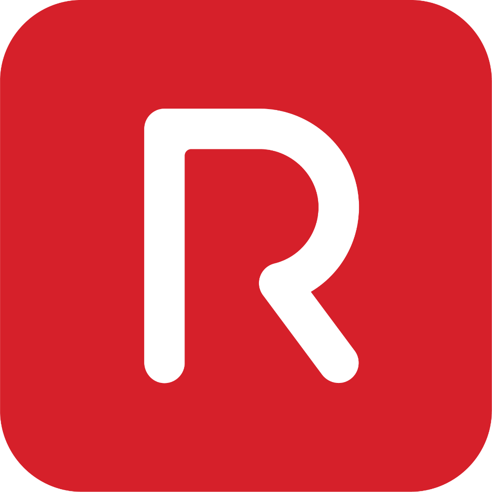

<!DOCTYPE html>
<html lang="en">
<head>
  <meta charset="UTF-8"/>
  <title>Agent Boss Presentation</title>
  
  <link rel="preconnect" href="https://fonts.googleapis.com">
  <link rel="preconnect" href="https://fonts.gstatic.com" crossorigin>
  <link href="https://fonts.googleapis.com/css2?family=Inter:wght@400;500;600&display=swap" rel="stylesheet">
  
  <script src="https://cdnjs.cloudflare.com/ajax/libs/gsap/3.12.2/gsap.min.js"></script>
  
  <script type="importmap">
    {
      "imports": {
        "three": "https://unpkg.com/three@0.174.0/build/three.module.js",
        "three/addons/": "https://unpkg.com/three@0.174.0/examples/jsm/"
      }
    }
  </script>
  
  <style>
    /* Base Reset & Styles */
    * {
      margin: 0;
      padding: 0;
      box-sizing: border-box;
    }

    body {
      font-family: 'Inter', -apple-system, sans-serif;
      background: #000;
      color: #fff;
      overflow: hidden;
      user-select: none;
      -webkit-font-smoothing: antialiased;
    }

    .scene {
      position: absolute;
      inset: 0;
      display: flex;
      flex-direction: column;
      align-items: center;
      justify-content: flex-start;
      visibility: hidden;
      opacity: 0;
    }

    .scene[style*="visibility: hidden"] {
      opacity: 0 !important;
    }

    .text-block {
      margin: 24px;
      margin-top: 20vh;
      max-width: 75%;
      text-align: center;
      position: absolute;
      z-index: 10;
      text-wrap: balance;
      font-size: clamp(28px, 4vw, 64px);
      line-height: 1.3;
      font-weight: 500;
      letter-spacing: -0.015em;
    }

    .word_wrap {
      position: relative;
      display: inline-block;
    }

    .word_wrap::before {
      content: attr(data-word);
      visibility: hidden;
    }

    .word {
      position: absolute;
      top: 0;
      left: 0;
      width: 100%;
      color: #696969;
      opacity: 0;
      will-change: filter, opacity, transform;
    }

    .word.emphasized {
      color: #fff;
    }

    #waveCanvas {
      position: absolute;
      inset: 0;
      top: 0;
      left: -150px;
      right: -150px;
      width: calc(100% + 300px);
      height: 100%;
      bottom: 0;
      z-index: 1;
      will-change: transform;
      transform: translateZ(0);
      contain: layout paint style;
      content-visibility: auto;
    }

    #waveCanvas canvas {
      opacity: 0;
      transition: opacity .3s ease-out;
      will-change: opacity;
    }

    #footer {
      position: absolute;
      bottom: 16px;
      right: 24px;
      z-index: 10000;
      font-size: 10px;
      color: rgba(255, 255, 255, 0.3);
      display: flex;
      align-items: center;
      gap: 5px;
      pointer-events: none;
      letter-spacing: 0.5px;
    }
    #footer img {
      height: 12px;
      filter: brightness(0) invert(1);
      opacity: 0.6;
    }
  </style>
</head>

<body>
  <div id="footer">
    Design from HP IQ. Remixed by Kaden Tennent. Made for 
  </div>

  <div id="scene1" class="scene">
    <div id="waveCanvas"></div>
  </div>

  <script type="module">
    // --- THREE Imports ---
    import * as THREE from "three";
    import { EffectComposer } from "three/addons/postprocessing/EffectComposer.js";
    import { RenderPass } from "three/addons/postprocessing/RenderPass.js";
    import { UnrealBloomPass } from "three/addons/postprocessing/UnrealBloomPass.js";
    import { ShaderPass } from "three/addons/postprocessing/ShaderPass.js";

    // --- Shaders (Film Grain & Simple Grain) ---
    const FilmGrainShader = {
      uniforms: {
        tDiffuse: { value: null },
        time: { value: 0 },
        intensity: { value: 1.1 },
        grainScale: { value: 0.5 }
      },
      vertexShader: `
        varying vec2 vUv;
        void main() {
          vUv = uv;
          gl_Position = projectionMatrix * modelViewMatrix * vec4(position, 1.0);
        }
      `,
      fragmentShader: `
        #ifdef GL_ES
          precision highp int;
          precision mediump float;
        #else
          precision mediump float;
        #endif
        uniform sampler2D tDiffuse;
        uniform float time;
        uniform float intensity;
        uniform float grainScale;
        varying vec2 vUv;

        float sparkleNoise(vec2 p) {
          vec2 jPos = p + vec2(37.0, 17.0) * fract(time * 0.07);
          vec3 p3 = fract(vec3(jPos.xyx) * vec3(.1031, .1030, .0973) + time * 0.1);
          p3 += dot(p3, p3.yxz + 19.19);
          return fract((p3.x + p3.y) * p3.z);
        }

        void main() {
          vec4 color = texture2D(tDiffuse, vUv);
          vec2 pos = gl_FragCoord.xy * 0.5 * grainScale;
          float noise = sparkleNoise(pos);
          noise = noise * 2.0 - 1.0;
          vec3 result = color.rgb + noise * intensity * 0.1;
          gl_FragColor = vec4(result, color.a);
        }
      `
    };

    function createFilmGrainPass(intensity = 0.9, grainScale = 0.3) {
      const pass = new ShaderPass(FilmGrainShader);
      pass.uniforms.intensity.value = intensity;
      pass.uniforms.grainScale.value = grainScale;
      return pass;
    }

    // --- Scene Text Content ---
    const sceneTexts = [
      "Welcome to *RCOS* *Spring* *2026* *Workshops!* Today we discuss: *Become* *a* *Boss* *(for* *Agents)*",
      "Learn how to *orchestrate* a team of *AI* *agents* to plan, code, and ship software at *breakneck* *speed.*",
      "AI is moving fast, but the real question isn't if you should use it, it's *how* *to* *use* *it* *effectively.* This workshop breaks down how *large* *language* *models* can amplify your design and development process *without* giving up control.",
      "We'll explore how to architect systems that use AI agents *deliberately:* defining *roles,* *constraints,* using codebase *context,* and *guardrails* so outputs stay grounded in your codebase and aligned with your goals.",
      "You’ll learn to be the *Agent* *Boss* by setting strategy, designing workflows, enforcing safeguards, and *orchestrating* *multiple* *agents* toward clear outcomes to increase *shipping* *velocity* and maintain *quality.*",
      "Join me on *March* *27,* *2026* from 5:50 PM to 7:00 PM in *Carnegie* *205*. Bring your laptop and let's build the future of *agent-driven* *development.*"
    ];


    // --- Wave State & Keyframes ---
    const wave1 = { gain: 10, frequency: 0, waveLength: 0.5, currentAngle: 0 };
    const wave2 = { gain: 0, frequency: 0, waveLength: 0.5, currentAngle: 0 };

    const waveKeyframes1 = [
      { time: 0, gain: 10, frequency: 0, waveLength: 0.5 },
      { time: 4, gain: 300, frequency: 1, waveLength: 0.5 },
      { time: 6, gain: 300, frequency: 4, waveLength: Math.PI * 1.5 },
      { time: 8, gain: 225, frequency: 4, waveLength: Math.PI * 1.5 },
      { time: 10, gain: 500, frequency: 1, waveLength: Math.PI * 1.5 },
      { time: 14, gain: 225, frequency: 3, waveLength: Math.PI * 1.5 },
      { time: 22, gain: 100, frequency: 6, waveLength: Math.PI * 1.5 },
      { time: 28, gain: 0, frequency: 0.9, waveLength: 0.5 },
      { time: 30, gain: 128, frequency: 0.9, waveLength: 0.5 },
      { time: 32, gain: 190, frequency: 1.42, waveLength: 0.5 },
      { time: 39, gain: 499, frequency: 4.0, waveLength: Math.PI * 1.5 },
      { time: 40, gain: 500, frequency: 4.0, waveLength: Math.PI * 1.5 },
      { time: 42, gain: 400, frequency: 2.82, waveLength: Math.PI * 1.5 },
      { time: 44, gain: 327, frequency: 2.56, waveLength: Math.PI * 1.5 },
      { time: 48, gain: 188, frequency: 5.4, waveLength: 0.5 },
      { time: 52, gain: 32, frequency: 0.1, waveLength: 0.5 },
      { time: 55, gain: 10, frequency: 0, waveLength: 0.5 }
    ];
    const waveKeyframes2 = [
      { time: 0, gain: 0, frequency: 0, waveLength: 0.5 },
      { time: 9, gain: 0, frequency: 0, waveLength: 0.5 },
      { time: 10, gain: 400, frequency: 1, waveLength: 0.5 },
      { time: 13, gain: 300, frequency: 4, waveLength: Math.PI * 1.5 },
      { time: 24, gain: 96, frequency: 2, waveLength: 0.5 },
      { time: 28, gain: 0, frequency: 0.9, waveLength: 0.5 },
      { time: 30, gain: 142, frequency: 0.9, waveLength: 0.5 },
      { time: 36, gain: 374, frequency: 4.0, waveLength: Math.PI * 1.5 },
      { time: 38, gain: 375, frequency: 4.0, waveLength: Math.PI * 1.5 },
      { time: 40, gain: 300, frequency: 2.26, waveLength: Math.PI * 1.5 },
      { time: 44, gain: 245, frequency: 2.05, waveLength: Math.PI * 1.5 },
      { time: 48, gain: 141, frequency: 5.12, waveLength: 0.5 },
      { time: 52, gain: 24, frequency: 0.08, waveLength: 0.5 },
      { time: 55, gain: 8, frequency: 0, waveLength: 0.5 }
    ];

    // --- Mouse & Glow Config ---
    const mouse = { x: 0, y: 0, active: false };
    let proxyMouseX = 0, proxyMouseY = 0, proxyInitialized = false;

    const glowConfig = { maxGlowDistance: 690, speedScale: 0.52, fadeSpeed: 4.4, glowFalloff: 0.6, mouseSmoothing: 30.0 };
    const glowDynamics = { accumulation: 1.2, decay: 3.3, max: 40.0, accumEase: 1.5, speedEase: 8.5 };

    let barCenters = null;
    function updateGlowDistance() {
      if (!barMaterial) return;
      const totalWidth = currentBarCount * (FIXED_BAR_WIDTH + FIXED_BAR_GAP) - FIXED_BAR_GAP;
      const spanPx = totalWidth * 0.3;
      glowConfig.maxGlowDistance = spanPx;
      barMaterial.uniforms.uMaxGlowDist.value = spanPx;
    }

    function accumulateGlow(dt) {
      if (!instancedBars) return;
      const attr = instancedBars.geometry.getAttribute("aGlow");
      const arr = attr.array;

      const mouseWorldX = proxyMouseX - cameraWidth * 0.5;
      const mDist = glowConfig.maxGlowDistance;
      const fall = glowConfig.glowFalloff;

      const decayLerp = 1.0 - Math.exp(-glowDynamics.decay * dt);
      const addEase = 1.0 - Math.exp(-glowDynamics.accumEase * dt);
      const vmax = glowDynamics.max;

      for (let i = 0; i < currentBarCount; i++) {
        const dx = Math.abs(mouseWorldX - barCenters[i]);
        const hit = (dx < mDist) ? 1.0 - Math.pow(dx / mDist, fall) : 0.0;
        const targetAdd = hit * smoothSpeed;
        const add = targetAdd * addEase;
        let g = arr[i] + add - (arr[i] * decayLerp);
        if (g > vmax) g = vmax;
        arr[i] = arr[i + currentBarCount] = g;
      }
      attr.needsUpdate = true;
    }

    // --- THREE.js Setup ---
    let DPR_CAP = 2;
    const mm = gsap.matchMedia();
    mm.add("(max-resolution: 180dpi)", () => { DPR_CAP = 1.5; });
    const PR = Math.min(window.devicePixelRatio, DPR_CAP);
    const EFFECT_PR = Math.min(window.devicePixelRatio, DPR_CAP) * 0.5;

    const waveContainer = document.getElementById("waveCanvas");
    const waveRenderer = new THREE.WebGLRenderer({ antialias: false, alpha: true });
    waveRenderer.setPixelRatio(EFFECT_PR);
    waveRenderer.toneMapping = THREE.ACESFilmicToneMapping;
    waveRenderer.toneMappingExposure = 1.0;
    waveRenderer.autoClear = false
    waveContainer.appendChild(waveRenderer.domElement);

    const waveScene = new THREE.Scene();
    let waveCamera, waveComposer, waveRenderPass, waveBloomPass, grainPass;
    let cameraWidth = 0, cameraHeight = 0, waveCameraInitialized = false;
    waveScene.fog = null;
    waveScene.add(new THREE.AmbientLight(0xffffff, 0.2));

    let setMouseNDC, setSmoothSpeed, setPhase1, setPhase2;

    const MAX_BARS = 100;
    const FIXED_BAR_WIDTH = 14;
    const FIXED_BAR_GAP = 10;
    let instancedBars, currentBarCount = 0, barMaterial;

    function createInstancedBars() {
      if (instancedBars) {
        waveScene.remove(instancedBars);
        instancedBars.geometry.dispose();
        instancedBars.material.dispose();
        instancedBars = null;
      }

      const waveWidth = cameraWidth * 1;
      const gap = FIXED_BAR_GAP;
      const barCount = Math.min(MAX_BARS, Math.max(1, Math.floor((waveWidth + gap) / (FIXED_BAR_WIDTH + gap))));
      currentBarCount = barCount;

      const totalW = barCount * (FIXED_BAR_WIDTH + gap) - gap;
      const startX = -totalW / 2 - 150;
      const instCnt = barCount * 2;
      barCenters = new Float32Array(barCount);

      const aXPos = new Float32Array(instCnt);
      const aPosNorm = new Float32Array(instCnt);
      const aGroup = new Float32Array(instCnt);
      const aGlow = new Float32Array(instCnt).fill(0);

      for (let i = 0; i < barCount; i++) {
        const x = startX + FIXED_BAR_WIDTH / 2 + i * (FIXED_BAR_WIDTH + gap);
        barCenters[i] = x;
        const t = barCount > 1 ? i / (barCount - 1) : 0;
        aXPos[i] = x; aXPos[i + barCount] = x;
        aPosNorm[i] = t; aPosNorm[i + barCount] = t;
        aGroup[i] = 0; aGroup[i + barCount] = 1;
      }

      const geo = new THREE.PlaneGeometry(FIXED_BAR_WIDTH, 1, 1, 1);
      geo.translate(0, 0.5, 0);
      geo.setAttribute("aXPos", new THREE.InstancedBufferAttribute(aXPos, 1));
      geo.setAttribute("aPosNorm", new THREE.InstancedBufferAttribute(aPosNorm, 1));
      geo.setAttribute("aGroup", new THREE.InstancedBufferAttribute(aGroup, 1));
      geo.setAttribute("aGlow", new THREE.InstancedBufferAttribute(aGlow, 1).setUsage(THREE.DynamicDrawUsage));

      barMaterial = createInstancedMaterial();
      instancedBars = new THREE.InstancedMesh(geo, barMaterial, instCnt);
      instancedBars.frustumCulled = false;
      waveScene.add(instancedBars);

      setupQuickSetters();
      updateGlowDistance();
    }

    function createInstancedMaterial() {
      // Kept the red!
      const baseCol = new THREE.Color("#D6001C");
      const emisCol = new THREE.Color("#D6001C");

      return new THREE.ShaderMaterial({
        defines: { USE_INSTANCING: '' },
        uniforms: {
          uMouseClipX: { value: 0 },
          uHalfW: { value: 0 },
          uMaxGlowDist: { value: glowConfig.maxGlowDistance },
          uGlowFalloff: { value: glowConfig.glowFalloff },
          uSmoothSpeed: { value: 0 },
          uGainMul: { value: 1 },
          uBaseY: { value: 0 },
          w1Gain: { value: wave1.gain },
          w1Len: { value: wave1.waveLength },
          w1Phase: { value: 0 },
          w2Gain: { value: wave2.gain },
          w2Len: { value: wave2.waveLength },
          w2Phase: { value: 0 },
          uFixedTipPx: { value: 10 },
          uMinBottomWidthPx: { value: 0 },
          uColor: { value: baseCol },
          uEmissive: { value: emisCol },
          uBaseEmissive: { value: 0.05 },
          uRotationAngle: { value: THREE.MathUtils.degToRad(23.4) }
        },
        vertexShader: `
          attribute float aXPos, aPosNorm, aGroup, aGlow;
          uniform float uMouseClipX, uHalfW, uMaxGlowDist, uGlowFalloff;
          uniform float uGainMul, uBaseY;
          uniform float w1Gain, w1Len, w1Phase;
          uniform float w2Gain, w2Len, w2Phase;
          uniform float uRotationAngle;
          varying float vGlow, vPulse, vHeight;
          varying vec2 vUv;

          float sineH(float g, float len, float ph, float t){
            return max(20.0, (sin(ph + t * len) * 0.5 + 0.6) * g * uGainMul);
          }

          void main(){
            vUv = uv;
            float h1 = sineH(w1Gain, w1Len, w1Phase, aPosNorm);
            float h2 = sineH(w2Gain, w2Len, w2Phase, aPosNorm);
            vHeight = mix(h1, h2, aGroup);

            vec3 pos = position;
            pos.x += aXPos;
            pos.y = 0.0;

            float height = vHeight * uv.y;
            pos.x += height * tan(uRotationAngle);
            pos.y += height;

            pos.y += uBaseY;

            vec4 clip = projectionMatrix * modelViewMatrix * vec4(pos,1.0);
            float dxPx = abs(uMouseClipX - clip.x/clip.w) * uHalfW;
            float prox = clamp(1.0 - pow(dxPx / uMaxGlowDist, uGlowFalloff), 0.0, 1.0);

            vGlow  = aGlow;
            vPulse = prox;
            gl_Position = clip;
          }
        `,
        fragmentShader: `
          #ifdef GL_ES
            precision highp int;
            precision mediump float;
          #else
            precision mediump float;
          #endif
          uniform vec3 uColor, uEmissive;
          uniform float uBaseEmissive;
          uniform float uFixedTipPx, uMinBottomWidthPx;
          varying float vGlow, vPulse, vHeight;
          varying vec2 vUv;

          void main(){
            float tipProp = clamp(uFixedTipPx / vHeight, 0.0, 0.95);
            float transitionY = 1.0 - tipProp;
            float xFromCenter = abs(vUv.x - 0.5) * 2.0;
            float px = fwidth(vUv.x);
            float allowedWidth;

            if (vUv.y >= transitionY){
              float topPos = (vUv.y - transitionY) / tipProp;
              allowedWidth = 1.0 - pow(topPos, 0.9);
            } else {
              float bottomPos = vUv.y / transitionY;
              allowedWidth = max(uMinBottomWidthPx * px * 10.0, pow(bottomPos, 0.5));
            }

            float alpha = smoothstep(-px, px, allowedWidth - xFromCenter);
            if (alpha < 0.01) discard;

            float emissiveStrength = uBaseEmissive + vGlow * 0.9 + vPulse * 0.15;
            vec3 finalColor = uColor + uEmissive * emissiveStrength;
            gl_FragColor = vec4(finalColor, 0.35 * alpha);
          }
        `,
        side: THREE.FrontSide,
        transparent: true,
        depthWrite: false,
        blending: THREE.AdditiveBlending
      });
    }

    function setupQuickSetters() {
      const u = instancedBars.material.uniforms;
      setMouseNDC = gsap.quickSetter(u.uMouseClipX, 'value');
      setSmoothSpeed = gsap.quickSetter(u.uSmoothSpeed, 'value');
      setPhase1 = gsap.quickSetter(u.w1Phase, 'value');
      setPhase2 = gsap.quickSetter(u.w2Phase, 'value');
    }

    const MAX_KEYFRAME_GAIN = 500;
    const SCREEN_COVERAGE = 0.6;
    function updateGainMultiplier() {
      if (!barMaterial) return;
      const targetPx = cameraHeight * SCREEN_COVERAGE;
      barMaterial.uniforms.uGainMul.value = targetPx / MAX_KEYFRAME_GAIN;
    }

    // --- Pointer Tracking ---
    function setupPointerTracking() {
      const el = waveRenderer.domElement;
      const readCoords = (e) => {
        if ("clientX" in e) return { x: e.clientX, y: e.clientY };
        const t = e.touches?.[0] || e.changedTouches?.[0];
        return t ? { x: t.clientX, y: t.clientY } : { x: mouse.x, y: mouse.y };
      };
      const updatePos = (e, active) => {
        const { x, y } = readCoords(e);
        const r = rect;
        mouse.x = x - r.left;
        mouse.y = y - r.top;
        mouse.active = active;
        if (!proxyInitialized) {
          proxyMouseX = mouse.x;
          proxyMouseY = mouse.y;
          proxyInitialized = true;
        }
      };
      const activate = (e) => updatePos(e, true);
      const move = (e) => updatePos(e, true);
      const deactivate = () => { mouse.active = false; };

      el.addEventListener("pointerdown", activate, { passive: true });
      el.addEventListener("pointermove", move, { passive: true });
      window.addEventListener("pointerup", deactivate, { passive: true });
      el.addEventListener("pointerleave", deactivate, { passive: true });

      el.addEventListener("touchstart", activate, { passive: true });
      el.addEventListener("touchmove", move, { passive: true });
      window.addEventListener("touchend", deactivate, { passive: true });
      window.addEventListener("touchcancel", deactivate, { passive: true });
    }

    // --- GSAP Ticker (Update Loop) ---
    let smoothSpeed = 0;
    let rect = waveRenderer.domElement.getBoundingClientRect();

    gsap.ticker.add(() => {
      if (!waveCameraInitialized || !instancedBars) return;
      const dt = gsap.ticker.deltaRatio() * (1 / 60);

      wave1.currentAngle = (wave1.currentAngle + wave1.frequency * dt) % (Math.PI * 2);
      wave2.currentAngle = (wave2.currentAngle + wave2.frequency * dt) % (Math.PI * 2);
      setPhase1(wave1.currentAngle);
      setPhase2(wave2.currentAngle);

      const kMouse = 1.0 - Math.exp(-glowConfig.mouseSmoothing * dt);
      proxyMouseX += (mouse.x - proxyMouseX) * kMouse;
      proxyMouseY += (mouse.y - proxyMouseY) * kMouse;

      const dx = mouse.active ? (mouse.x - proxyMouseX) : 0;
      const dy = mouse.active ? (mouse.y - proxyMouseY) : 0;
      const rawSpeed = Math.hypot(dx, dy * 0.1) * glowConfig.speedScale;

      const kSpeed = 1.0 - Math.exp(-glowDynamics.speedEase * dt);
      smoothSpeed += (rawSpeed - smoothSpeed) * kSpeed;
      setSmoothSpeed(smoothSpeed);

      const u = instancedBars.material.uniforms;
      u.w1Gain.value = wave1.gain;
      u.w1Len.value = wave1.waveLength;
      u.w2Gain.value = wave2.gain;
      u.w2Len.value = wave2.waveLength;

      const mouseClipX = (proxyMouseX / cameraWidth) * 2 - 1;
      setMouseNDC(mouseClipX);
      let baseOffset = 40;
      if (window.innerWidth < 768) {
        baseOffset = 20;
      }
      u.uBaseY.value = -cameraHeight * 0.5 + baseOffset;

      grainPass.uniforms.time.value += dt * 0.2;

      accumulateGlow(dt);
      waveComposer.render();
    });

    // --- Keyframe Tweens ---
    function buildKeyframeTweens(target, keyframes) {
      const tl = gsap.timeline();
      for (let i = 0; i < keyframes.length - 1; i++) {
        const cur = keyframes[i];
        const nxt = keyframes[i + 1];
        const duration = nxt.time - cur.time;
        tl.to(target, {
          gain: nxt.gain,
          frequency: nxt.frequency,
          waveLength: nxt.waveLength,
          duration,
          ease: "power2.inOut"
        }, cur.time);
      }
      return tl;
    }

    // --- Text Handling & Presentation Logic ---
    function splitTextIntoWords(str) {
      return str
        .trim()
        .split(/\s+/)
        .map((raw, i, arr) => {
          const spacer = i < arr.length - 1 ? " " : "";
          const wrap = (core, extraClass = "", punct = "") => {
            return `
          <span class="word_wrap ${extraClass}" data-word="${core}${punct}">
            <span class="word ${extraClass}">
              ${core}${punct}
            </span>
          </span>${spacer}`;
          };
          const star = raw.match(/^\*(.+?)\*(\W*)$/);
          if (star) {
            const [, coreWord, punct = ""] = star;
            return wrap(coreWord, "emphasized", punct);
          }
          return wrap(raw, "");
        })
        .join("");
    }

    const textEls = [];
    function initTextBlocks() {
      const container = document.getElementById('scene1');
      const frag = document.createDocumentFragment();
      sceneTexts.forEach(str => {
        const div = document.createElement('div');
        div.className = 'text-block';
        div.innerHTML = splitTextIntoWords(str);
        frag.appendChild(div);
        textEls.push(div);
      });
      container.appendChild(frag);
    }

    function settleBlur(words) {
      if (!words || !words.length) return;
      words.forEach(el => {
        el.style.filter = "none";
        el.style.webkitFilter = "none";
      });
      requestAnimationFrame(() => words.forEach(el => (el.style.willChange = "auto")));
    }

    let currentSlide = -1;
    let isAnimating = false;

    function showSlide(index, forward = true) {
      if (isAnimating) return;
      if (index < 0 || index >= textEls.length) return;
      if (index === currentSlide) return;
      
      isAnimating = true;

      const tl = gsap.timeline({
        onComplete: () => {
          currentSlide = index;
          isAnimating = false;
        }
      });

      const oldWords = currentSlide >= 0 && currentSlide < textEls.length 
          ? Array.from(textEls[currentSlide].querySelectorAll(".word")) 
          : [];
          
      const newWords = Array.from(textEls[index].querySelectorAll(".word"));
      const staggerIn = 2.5 / Math.max(newWords.length, 1);
      const staggerOut = 1.0 / Math.max(oldWords.length, 1);

      const baseTime = oldWords.length > 0 ? 1.0 : 0;

      if (oldWords.length > 0) {
        tl.to(oldWords, {
          opacity: 0, 
          y: forward ? -10 : 10, 
          filter: "blur(10px)", 
          webkitFilter: "blur(10px)",
          duration: 1.0, 
          stagger: staggerOut
        }, 0);
      }

      tl.set(newWords, {
        opacity: 0, 
        y: forward ? 10 : -10, 
        filter: "blur(10px)", 
        webkitFilter: "blur(10px)",
      }, baseTime - 0.01);

      tl.to(newWords, {
        opacity: 1, 
        y: 0, 
        filter: "blur(0px)", 
        webkitFilter: "blur(0px)",
        duration: 2.5, 
        stagger: staggerIn, 
        onComplete: settleBlur, 
        onCompleteParams: [newWords]
      }, baseTime);
    }

    window.addEventListener("keydown", (e) => {
      if (e.key === "ArrowRight" || e.key === " ") {
        if (currentSlide < textEls.length - 1) {
          showSlide(Math.max(currentSlide + 1, 0), true);
        }
      } else if (e.key === "ArrowLeft") {
        if (currentSlide > 0) {
          showSlide(currentSlide - 1, false);
        }
      }
    });

    // --- Scene 1 Timeline ---
    function buildScene1Timeline() {
      const tl = gsap.timeline({
        repeat: -1,
        onStart() {
          showScene1();
        }
      });
      tl.add(buildKeyframeTweens(wave1, waveKeyframes1), 0);
      tl.add(buildKeyframeTweens(wave2, waveKeyframes2), 0);
      // Removed automatic text show/hide logic
      return tl;
    }

    function showScene1() {
      gsap.set("#scene1", { visibility: "visible", opacity: 0 });

      if (!waveCameraInitialized) {
        initWaveThree();
        onResize(waveContainer.clientWidth, waveContainer.clientHeight);
      }

      gsap.to("#waveCanvas canvas", {
        opacity: 1,
        duration: 1,
        ease: "power2.out"
      });

      gsap.to("#scene1", { opacity: 1, duration: 1, ease: "power2.out" });
    }

    // --- Init & Resize ---
    function initWaveThree() {
      cameraWidth = waveContainer.clientWidth;
      cameraHeight = waveContainer.clientHeight;
      waveCamera = new THREE.OrthographicCamera(
        -cameraWidth / 2, cameraWidth / 2,
        cameraHeight / 2, -cameraHeight / 2,
        -1000, 1000
      );
      waveCamera.position.z = 10;
      waveCamera.lookAt(0, 0, 0);

      waveRenderer.setSize(cameraWidth, cameraHeight);
      waveComposer = new EffectComposer(waveRenderer);
      waveComposer.setPixelRatio(EFFECT_PR);

      waveRenderPass = new RenderPass(waveScene, waveCamera);
      waveComposer.addPass(waveRenderPass);

      waveBloomPass = new UnrealBloomPass(
        new THREE.Vector2(cameraWidth, cameraHeight),
        1.0, 0.68, 0.0
      );
      waveBloomPass.resolution.set(cameraWidth * 0.5, cameraHeight * 0.5);
      waveComposer.addPass(waveBloomPass);

      grainPass = createFilmGrainPass();
      waveComposer.addPass(grainPass);

      createInstancedBars();
      setupPointerTracking();
      updateGainMultiplier();
      waveCameraInitialized = true;
    }

    let pendingW = 0, pendingH = 0, heavyResizeTimer = null;
    function onResize(newW, newH) {
      if (!waveCameraInitialized) return;
      pendingW = newW;
      pendingH = newH;

      cameraWidth = newW;
      cameraHeight = newH;
      waveCamera.left = -cameraWidth / 2;
      waveCamera.right = cameraWidth / 2;
      waveCamera.top = cameraHeight / 2;
      waveCamera.bottom = -cameraHeight / 2;
      waveCamera.updateProjectionMatrix();

      const waveWidth = cameraWidth * 0.9;
      const gap = FIXED_BAR_GAP;
      const barCount = Math.min(
        MAX_BARS,
        Math.max(1, Math.floor((waveWidth + gap) / (FIXED_BAR_WIDTH + gap)))
      );

      if (barCount !== currentBarCount) {
        currentBarCount = barCount;
        createInstancedBars();
      } else {
        const totW = barCount * (FIXED_BAR_WIDTH + gap) - gap;
        const startX = -totW / 2 - 50;
        const aX = instancedBars.geometry.getAttribute("aXPos");
        const aT = instancedBars.geometry.getAttribute("aPosNorm");

        for (let i = 0; i < barCount; i++) {
          const x = startX + FIXED_BAR_WIDTH / 2 + i * (FIXED_BAR_WIDTH + gap);
          const t = barCount > 1 ? i / (barCount - 1) : 0;
          aX.array[i] = aX.array[i + barCount] = x;
          aT.array[i] = aT.array[i + barCount] = t;
        }
        aX.needsUpdate = true;
        aT.needsUpdate = true;
      }

      barMaterial.uniforms.uHalfW.value = cameraWidth * 0.5;
      updateGainMultiplier();
      updateGlowDistance();

      clearTimeout(heavyResizeTimer);
      heavyResizeTimer = setTimeout(applyHeavyResize, 10);
      rect = waveRenderer.domElement.getBoundingClientRect();
    }

    function applyHeavyResize() {
      heavyResizeTimer = null;
      waveRenderer.setPixelRatio(EFFECT_PR);
      waveRenderer.setSize(pendingW, pendingH);
      waveComposer.setSize(pendingW, pendingH);
      waveBloomPass?.setSize(pendingW, pendingH);
      grainPass?.setSize(pendingW, pendingH);
      grainPass.uniforms.grainScale.value = 0.5;
    }

    function disposeWaveScene() {
      gsap.globalTimeline.clear();
      waveScene.traverse(obj => {
        if (obj.isMesh) {
          obj.geometry.dispose();
          if (Array.isArray(obj.material)) {
            obj.material.forEach(m => m.dispose());
          } else {
            obj.material.dispose();
          }
        }
      });
      grainPass?.dispose?.();
      waveBloomPass?.dispose?.();
      waveComposer?.dispose?.();
      waveRenderer?.dispose?.();
      instancedBars = null;
    }
    window.addEventListener('beforeunload', disposeWaveScene);

    // --- Main ---
    const ro = new ResizeObserver(entries => {
      for (const e of entries) {
        if (e.target === waveContainer) {
          onResize(e.contentRect.width, e.contentRect.height);
        }
      }
    });
    ro.observe(waveContainer);

    const initApp = () => {
      initTextBlocks();
      
      textEls.forEach((block) => {
        const words = Array.from(block.querySelectorAll(".word"));
        gsap.set(words, { opacity: 0, y: 10, filter: "blur(10px)", webkitFilter: "blur(10px)" });
      });

      const mainTimeline = buildScene1Timeline();
      mainTimeline.play(0);

      // Give the wave background 1 second to fade in before we gently introduce the first slide
      setTimeout(() => { 
        showSlide(0, true); 
      }, 1000);
    };

    if (document.readyState === 'loading') {
      document.addEventListener('DOMContentLoaded', initApp);
    } else {
      initApp();
    }

    document.addEventListener("visibilitychange", () => {
      document.hidden ? gsap.globalTimeline.pause() : gsap.globalTimeline.resume();
    });
  </script>
</body>
</html>
